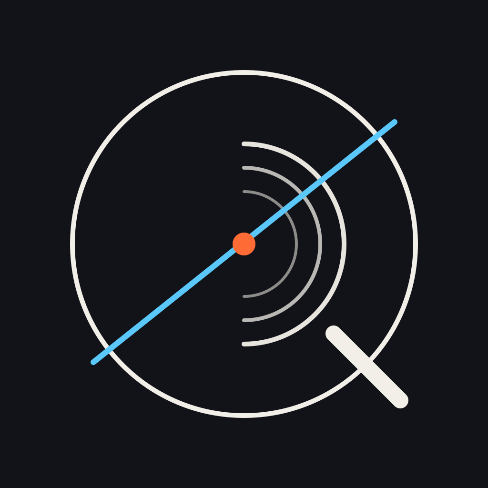

Obsidian + AI 工作流
不想让熟人知道，但想被同频的人看见
不卖焦虑，只记录真实搭建过程
不是教你怎么记笔记，是把一个流程切开，看看里面怎么运作。
黑曜石是 Obsidian 的中文意象；黑色石头，切开是年轮。
八分区 / 五对象 / 自动路由
一个模板 / 一个 Base / 一条流程
能直接用的模板与脚本
先看结构，再拆单点，最后装回你的库。
小红书 + B站负责“被看见”，公众号负责“被留下”，GitHub + 社区负责“被信任”。
评论区告诉我：你最想看「库结构」「模板」还是「AI 工作流」？